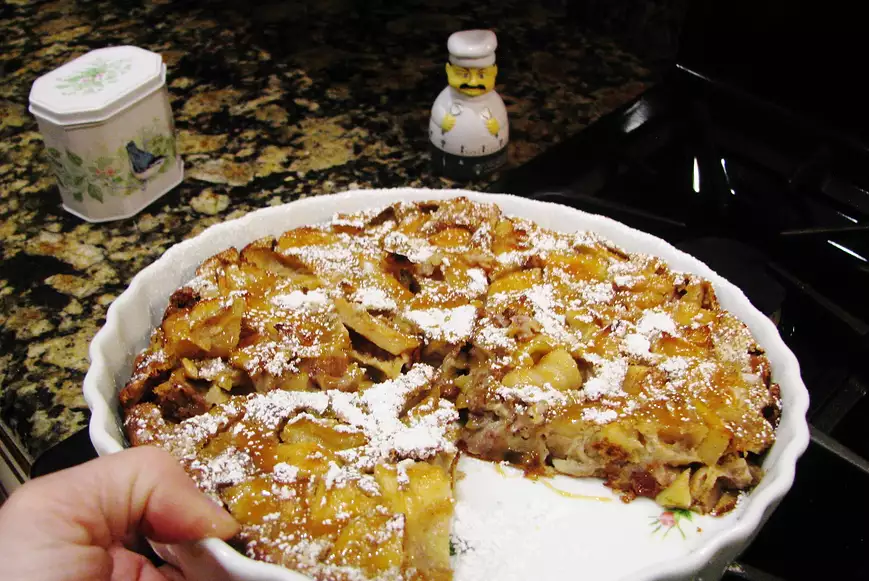

Pancake

Learn how to make a delicious Pancake
An easy to make pancake that serves 3 to 5 persons.
Prep Time: 75 minutes
Ingredients
- 4 eggs
- ½ cup unbleached all-purpose flour
- 1 tablespoon sugar
- ½ teaspoon baking powder
- 1 pinch salt
- 1 cup milk
- 1 teaspoon vanilla extract
- 2 tablespoons unsalted butter, melted
- ½ teaspoon ground nutmeg
- ¼ cup unsalted butter
- ½ cup white sugar, divided
- ½ teaspoon ground cinnamon
- ½ teaspoon ground nutmeg
- 1 large tart apple - peeled, cored and sliced
Steps
- Combine eggs, flour, 1 tablespoon sugar, baking powder, and salt in a large bowl;
gradually mix in milk, stirring constantly. Add vanilla, melted butter, and 1/2 teaspoon nutmeg.
Let batter stand for 30 minutes or overnight.
- Preheat the oven to 425 degrees F (220 degrees C).
- Melt butter in a 10-inch oven-proof skillet, brushing butter up on the sides of the pan.
Combine 1/4 cup sugar, cinnamon, and 1/2 teaspoon nutmeg in a small bowl;
sprinkle sugar mixture over the butter. Line the pan with apple slices.
Sprinkle the remaining 1/4 cup sugar over apples.
Place pan over medium-high heat until the mixture bubbles,
then gently pour batter mixture over apples.
- Bake in the preheated oven for 15 minutes. Reduce heat to 375 degrees F (190 degrees C) and bake for 10 minutes more.
Slide pancake onto a serving platter and cut into wedges.